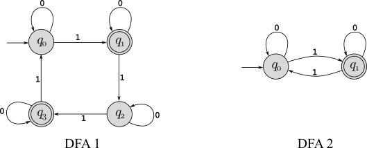

Consider the language \(CFL_{TM}=\{\langle M\rangle\,|\,L(M)\) is a context-free language\(\}\). Prove that this language is undecidable. (Hint: Note the similarity to the language \(REGULAR_{TM}\) in Section 5.1.)
Let \(L_{W1}=\{\langle M,w\rangle\,|\, M\) writes a \(1\) on its tape at some point when started with input \(w\}\). Prove that \(L_{W1}\) is undecidable.
Define \(L_{ALL}=\Sigma^*\) for input alphabet \(\Sigma\). If language \(A\) is reducible to \(L_{ALL}\), what can you conclude about \(A\), and why? (Note: A very strong conclusion can be drawn – full credit only for the most precise conclusion possible.)
The language CLIQUE=\(\{\langle G,k\rangle\,|\,G\) is an undirected graph with a \(k\)-clique\(\}\) was defined on page 296, and then later shown (in Corollary 7.43) to be NP-complete. Consider the following language, which “hard-codes” the value \(k\): 6-CLIQUE=\(\{\langle G\rangle\,|\,G\) is an undirected graph with a 6-clique\(\}\). Can 6-CLIQUE be decided in polynomial time? Be clear in your answer (it might not be just “yes” or “no”!), and fully justify your answer.
The population of FeudLand consists of people who have sworn “blood feuds” against certain other people from FeudLand — for example, Joe has declared a blood feud against Abe, where if Joe and Abe are ever in the same room they will try to kill each other. The blood feuds are all well-known and publicized, so it’s possible to make a list of all pairs of people who have sworn blood feuds against each other. A mediator would like to gather as large a group of residents as possible from FeudLand for a discussion on how they can make FeudLand a more peaceful place to live, but obviously can’t include two people who are feuding to the meeting. Your job is to see if it’s possible to compute the best (maximum size) invitation list for a peaceful meeting.
Formalize notation so that the statement of this problem is precise. You are free to use any standard computer science or mathematical structure that makes this problem clear.
Define a language (i.e., decision problem) that captures the computational complexity of the optimization problem described in this problem.
Show that this language is NP-complete. (Hint: This problem is very closely related, at an abstract level, to one of the NP-complete problems in Chapter 7, but you might have to change your point of view to see it. What if you thought about identifying pairs of people that are compatible, so can be in the same room together, rather than pairs of people that have a feud.)
What does this say about creating the best possible invitation list? Can you do it in a reasonable amount of time?
Programming Problem: Write a program that determines if two DFAs with input alphabet \(\Sigma=\{0,1\}\) recognize the same language. For example, imagine that someone creates a DFA that accepts binary strings in which the number of 1’s mod 4 is either 1 or 3, given as “DFA 1” below. Later, they realize that this is really just the same thing as the language of all binary strings with odd parity, which is “DFA 2” below. Are these really equivalent? That might be easy to see for this example, but what if the DFAs had hundreds or even thousands of states? That’s what your program will decide!

Skeleton code, including code to read an input file and create a DFA object from it, is provided at https://github.com/srtate/ToC-Assignment5. The input format is simple: The first line contains the number of states (\(n\)) and the number of accepting states (\(f\)). This is followed by \(n\) lines that each describe the transition function leaving that state with 3 numbers: First the current state number (states are numbered \(0,\cdots,n-1\)), then the state that is transitioned to with input \(0\), and then the state that is transitioned to with input \(1\). Finally, after all transitions are defined, there is a line listing the \(f\) accepting states. The start state is always state 0. Using this format, DFA 1 above is described by:
4 2
0 0 1
1 1 2
2 2 3
3 3 0
1 3DFA2 is given by:
2 1
0 0 1
1 1 0
1Your code needs to follow decent and rational coding standards, but I’m not requiring any particular coding or documentation style. Just make it the code understandable and easy to read! The most important thing is whether your program correctly solves the problem, and runs efficiently. If one DFA has \(n_1\) states and the other has \(n_2\) states, then following the basic algorithms from Chapter 4 and Chapter 1 you can easily code this as an algorithm that runs in \(O(n_1n_2)\) time. You may modify the core DFA class and definition if you’d like, although it is entirely unnecessary. Adding additional methods that do useful things with DFAs might certanly be a good idea though. If you want to use some language other than Java, you can do that, but you’ll need to start from scratch (using the same DFA input format!).
These are individual assignments, so you may not share code or even show your code to any other student. You are allowed to create and share additional test data with each other, and you are encouraged to do so! There is a special “Assignment 5 Code Submission” assignment set up in Canvas that will accept files of any type. Use that to submit your code.